4 机器学习与算法交易
人工智能（Artificial Intelligence，AI） 是一个研究如何使计算机系统具备智能行为和思维能力的领域。 作为学术概念，人工智能可以追述到1950年代 (McCarthy et al., 2006)。 早期对人工智能的研究集中在符号逻辑、推理和问题求解上。 到1980年代，机器学习开始引领人工智能的发展， 支持向量机(Boser et al., 1992; Cortes & Vapnik, 1995)（Support Vector Machine，SVM）、 决策树(Quinlan, 1986)（Decision Tree，DT） 和神经网络(Hopfield, 1982; Schmidhuber, 2015)（Neural Network， NN） 等算法的发展推动了机器学习领域的进步， 深度学习的概念也初现雏形。 2010年后，得益于显卡运算能力的快速提升， 基于大数据的深度学习模型取得了突破性的成果， 由此人工智能开始在各个领域被广泛应用。
在量化投资领域，人工智能已经被应用到各个方向。 例如，将线性资产定价模型推广到非线性的资产定价模型 (L. Chen et al., 2023; Gu et al., 2020; Nagel, 2021; Pan et al., 2023)， 构建并优化投资组合(Aitken et al., 2015)， 预测资产价格(Bustos & Pomares-Quimbaya, 2020; Ponomarev et al., 2019; Soni et al., 2022)， 管理投资风险(Aitken et al., 2015)， 分析市场情绪(Swathi et al., 2022; Yadav & Vishwakarma, 2020; L. Zhang et al., 2018), 进行市场合规检测(Liu et al., 2021) 等等。 本章将简要介绍若干常用的机器学习模型， 以及目前人工智能在量化投资领域中的几个重要应用。
4.1 机器学习简介
传统的计算机算法在处理问题时需要基于预设的规则（rule-based）， 当问题变得越来越复杂时，编写这类算法会遇到前所未有的阻力， 甚至无法实现。 机器学习则提供了一套基于经验（experience-based）解决思路， 通过对大量数据的学习令算法建立自身的规则， 从而依据经验对未知数据做出推断。
图4.1展示了机器学习的类型与常见算法。 机器学习根据学习方式的不同大致可以分为有监督学习、无监督学习以及强化学习。 根据解决的问题类型又可分为回归问题以及分类问题 （分类问题也可以抽象为目标为若干离散值的回归问题）。 深度学习是基于神经网络（Walter Pitts and Warren McCulloch, 1943）发展起来的一大类机器学习类型。 另外，集成学习近年也是一大类被广泛应用的机器学习思想。
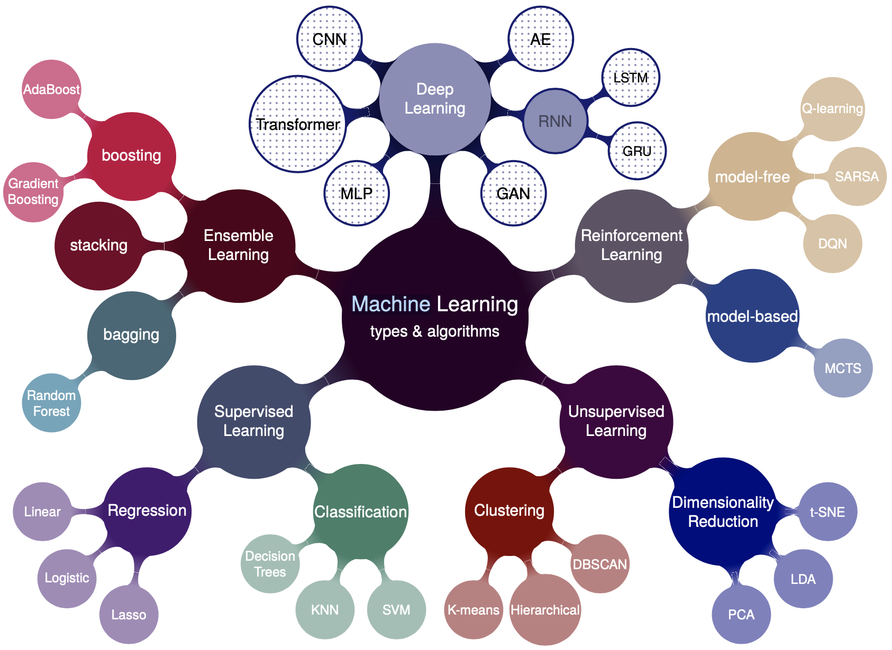
Figure 4.1: 机器学习的类型与代表性算法。
4.1.1 传统机器学习
传统机器学习是基于统计与代数发展起来的一类算法， 需要人工提取数据的特征（特征工程、特征选取、数据清洗）， 然后进行建模。
4.1.1.1 线性回归
线性回归模型是最简单的机器学习模型， 也是许多复杂模型特别是深度学习的基础。 线性回归的原理是利用线性函数对数据进行拟合， \[\begin{align} f(x) = wx+b\ . \end{align}\] 其中，自变量为\(x\)，\(w\)称为权重，\(b\)称为偏置。 假设有N个训练样本\(\{(x_1,y_1),\cdots,(x_N,y_N)\}\)， 定义损失函数（loss function）为样本真值与预测值间的误差， 成本函数（cost function）为样本的平均损失函数。 对线性回归通常取均方误差为模型的成本函数， \[\begin{align} J(w,b) = \frac{1}{N}\sum_{i=1}^N(y_i-f(x_i))^2\ . \end{align}\] 训练的目标是找出最优参数\(\hat{w}\)与\(\hat{b}\)使成本函数最小。
梯度下降法（Gradient descent）是求解优化问题的常用方法之一。 \[\begin{align} \hat{w} = w - \eta \frac{\partial J}{\partial w} \ ,\ \hat{b} = b - \eta \frac{\partial J}{\partial b} \tag{4.1} \end{align}\]\end{align} 其中，\(\eta\)为人为设定的机器学习的学习速率或步长 （learning rate/step size）。 对上式进行迭代直至结果收敛，得到最优参数\(\hat{w}\)与\(\hat{b}\)。
当样本数与特征值数目相等时， 称为充分参数化（sufficiently parameterized）， 此时仅有一个最优解，对应于成本函数等于0的解。 当样本数大于特征数目时， 称为欠参数化（under-parameterized）， 此时找不到成本函数等于0的解， 最优解对应于成本函数梯度等于0的解。 当样本数小于特征数目时， 称为过参数化（over-parameterized）， 此时可以找到多个最优解， 由梯度下降法给出的解称为Moore-Penrose解。
线性模型同样可以运用于分类问题。 例如，线性判别分析（Linear Discriminant Analysis，LDA） 是用于二分类问题的线性模型(FISHER, 1936)。
4.1.1.2 支持向量机
支持向量机是一类监督学习方法， 由统计学习演化而来(Boser et al., 1992; Cortes & Vapnik, 1995; Smola & Schölkopf, 2004)。 依然考虑一个二分类问题， 假设有一组训练数据 \(\{(x_1,y_1),\cdots,(x_\ell, y_\ell)\}\)， 其中\(x \in \mathbb{R}\)， \(y \in(1,-1)\)，1代表正样本，-1代表负样本。 线性分类器的学习目标是找到一个超平面 \(h(x)=w x + b = 0\)，使其可以区分所有正负样本。 支持向量定义了一个距离正负样本几何间隔（margin）最大的超平面。
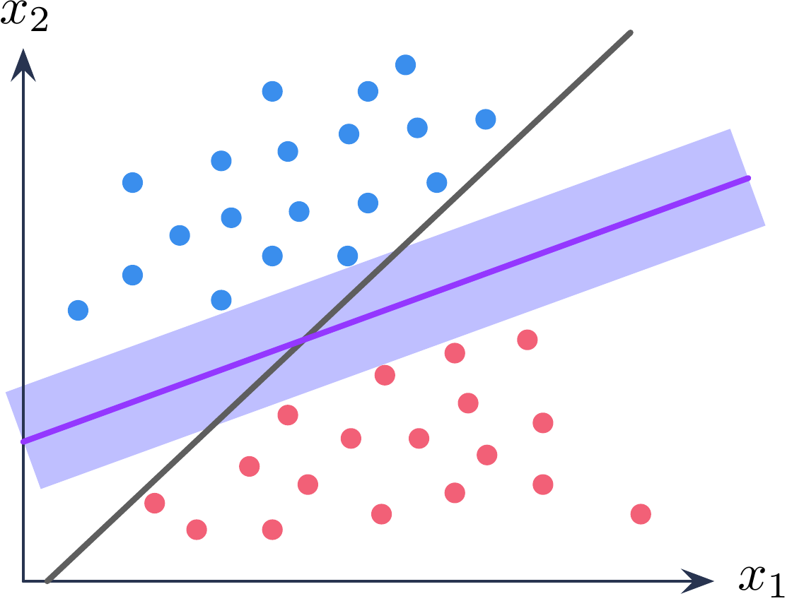
Figure 4.2: 支持向量机示意图。
求解支持向量可以转化为如下的凸优化问题： \[\begin{align} \min \quad & \frac{1}{2}||w||^2 \\ \text{s.t.} \quad & y_i(w x_i +b) \geq 1 , i = 1,\cdots, \ell . \end{align}\] 其中，\(||w||=\langle ww \rangle\)， \(\langle ab\rangle\)代表\(a\)点乘\(b\)。 对于有约束的凸优化问题，可以使用拉格朗日乘子法。 构造如下拉格朗日量， \[\begin{align} \bm{L}(w,b,\lambda) = \frac{1}{2}||w||^2 -\sum_i^\ell \lambda_i \left[y_i(wx_i+b)-1\right]\ . \tag{4.2} \end{align}\] 其中，\(\lambda_i\)为拉格朗日乘子，\(\lambda_i\geq 0\)。 分别令\(\partial_w \bm{L} \equiv 0\)， \(\partial_b \bm{L} \equiv 0\)可得， \[\begin{align} w-\sum_i^\ell \lambda_i y_i x_i = 0\ ,\quad \sum_i^\ell \lambda_i y_i =0 \ . \tag{4.3} \end{align}\] 将公式(4.3)代回公式(4.2)可得， \[\begin{align} \bm{L}(w,b,\lambda) = -\frac{1}{2}\sum_{i,j=1}^\ell \lambda_i \lambda_j y_i y_j \langle x_i x_j\rangle +\sum_i^\ell \lambda_i \end{align}\] 此时，问题转化为了求解如下对偶优化问题， \[\begin{align} \max \quad &-\frac{1}{2}\sum_{i,j=1}^\ell \lambda_i \lambda_j y_i y_j \langle x_i x_j\rangle +\sum_i^\ell \lambda_i \\ \text{s.t.} \quad & \lambda_i \geq 0\ ,\ i=1,\cdots,\ell \\ &\sum_i^\ell \lambda_i y_i =0\ . \end{align}\] 根据Karush-Kuhn-Tucker（KKT）条件(Karush, 1939; Kuhn & Tucker, 1950)， \[\begin{align} \lambda_i \left[ y_ih(x_i)-1 \right]= 0 \ . \end{align}\] 对任意样本都有\(\lambda_i=0\)或者\(y_ih(x_i)=1\)。
根据公式(4.3)，求解的超平面可以写为， \[\begin{align} h(x) = wx+b = \sum_{i=1}^\ell \lambda_i y_i \langle x_i x\rangle + b \end{align}\] 上式称为支持向量展开（SV expansion）。 当\(\lambda_i=0\)时，样本对\(h(x)\)没有贡献； 当\(\lambda_i> 0\)时，\(y_ih(x_i)=1\)， 此时对应的样本为支持向量。
上述讨论基于样本线性可分的前提， 对于线性不可分的情形， 可按照上述步骤将模型进行推广。 一种常用的方式是利用核函数（kernel function）对数据进行升维， 使其在更高维度上线性可分(Awad & Khanna, 2015; Smola & Schölkopf, 2004)。
由于支持向量机模型的复杂度仅取决于支持向量的个数， 因此支持向量机对小样本情况依然有效， 并且通过核函数，支持向量机可以高效的学习高维数据，避免了``维度灾难’’。
4.1.1.3 决策树
决策树（Decision Tree）是一类重要的监督学习算法(Quinlan, 1986)。 决策树通过对数据每个特征进行逐层划分， 最终得到一个多节点的分层树形结构。
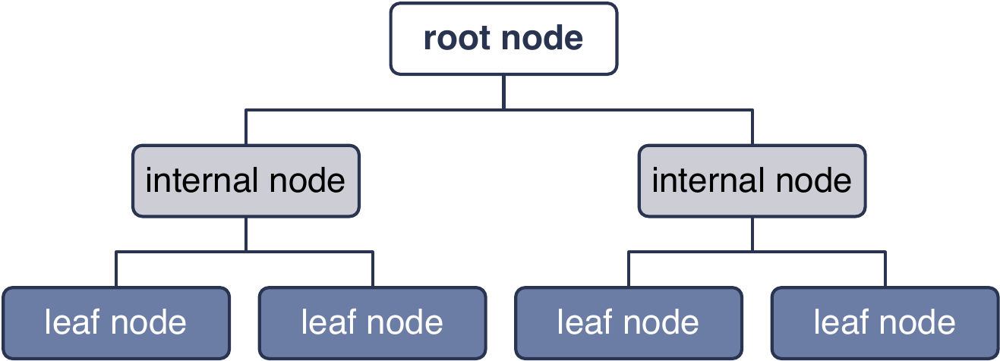
Figure 4.3: 决策树模型示意图。
决策树模型的关键是在每个节点应该选择哪种特征对数据进行划分。 选择特征的好坏可以通过不纯度（impurity）进行度量。 划分后，一个分支的所有实例所属分类越一致， 那么这个节点的划分就越纯。 假设决策树共有\(N\)个实例待划分， 到达节点\(m\)有\(N_m\)个实例， 其中属于类别\(i\)的实例个数为\(N_m^i\)， \(\sum_i N_m^i=N_m\)。 定义该节点的熵（entropy）， \[\begin{align} \mathcal{I}_m=-\sum_{i=1}^K p_m^i \log_2 p_m^i\ . \end{align}\] 其中， \[\begin{align} p_m^i = \frac{N_m^i}{N_m}\ . \end{align}\] 熵值越小，节点的纯度越高。 对于二分类问题（\(K=2\)），若\(p_m^1=1, P_m^2=0\)， 此时熵最小，为0。 对于\(K\)分类问题（\(K>2\)）， 可知当\(p^i=1/K\)时熵最大，为\(\log_2K\)。 如果一个节点不纯，说明该节点需要依据实例特征进一步划分。 划分的依据是保证划分后子节点的熵值尽可能低。 对节点\(m\)，假设划分后一共有\(L\)个子节点， \(N_m\)中有\(N_{mj}\)个实例被划分到了子节点\(j\)， 那么划分后总的不纯度为， \[\begin{align} \mathcal{I}_m'=-\sum_{j=1}^L\frac{N_{mj}}{N_m} \sum_{i=1}^K p_{mj}^i \log_2 p_{mj}^i\ . \label{eq:dt_tot_impure} \end{align}\] 其中， \[\begin{align} p_{mj}^i = \frac{N_{mj}^i}{N_{mj}}\ . \end{align}\] 构建决策树时，先对节点上的实例选取不同特征进行划分， 然后利用公式\(\ref{eq:dt_tot_impure}\)比较这些划分后的不纯度， 取不纯度最低时对应的特征为该节点最终的划分依据。
熵不是不纯度的唯一度量。 以二分类问题为例，令\(p^1\equiv p,p^2=1-p\)， 如果一个非负函数\(\psi\)满足如下三点条件， 那么就可以作为一个不纯度度量(Devroye et al., 1996)： \[\begin{align} \left\{ \begin{aligned} &\psi(1/2,1/2)\geq \psi(p,1-p), \forall p \in [0,1]\ , \\ &\psi(0,1)=\psi(1,0)=0 \ ,\\ &\psi(p,1-p) \text{在区间[0,1/2]递增，[1/2,1]递减} \ .\\ \end{aligned} \right. \end{align}\] 对于熵：\(\psi(p,1-p)=-p\log_2p-(1-p)\log_2(1-p)\)。 常用的不纯度度量还有基尼系数（Gini index）：\(\psi(p,1-p)=2p(1-p)\)； 分类误差率：\(\psi(p,1-p)=1-\max(p,1-p)\)。 ID3决策树使用熵作为不纯度度量(Quinlan, 1986)， CART（Classification and Regression Trees） 使用基尼系数作为不纯度度量(Breiman et al., 2017)，
决策树具有简单易用、易可视化等优点， 但是随着决策树节点数和深度的不断增加， 模型容易存在过拟合的风险。 一种降低过拟合风险的方式是剪枝（pruning）。 剪枝的方式有预剪枝（pre-pruning）与后剪枝（post-pruning）。 预剪枝是在训练决策树时，当子节点样本数小于预设值时， 则停止划分。 后剪枝是当全部训练完成后， 从叶节点开始逐层向上替代子节点， 如果决策树的性能可以提升， 则将子节点替换为叶节点。 对比预剪枝和后剪枝， 预剪枝速度更快，而后剪枝往往更精确(Alpaydin, 2020)。
4.1.2 深度学习
深度学习是机器学习领域中最热门的分支之一。 传统的机器学习技术受限于需要专业领域从业者对原始数据进行特征提取。 而深度学习可以直接通过对原始数据的逐层抽象表示， 学习非常复杂的非线性关系(LeCun et al., 2015)。
4.1.2.1 深度学习的发展历史
Walter Pitts 和 Warren McCulloch 在 1943 年提出了神经网络最初的数学模型(W. S. McCulloch & Pitts, 1943)。 Rosenblatt 在 1957建立了可以实际应用于二分类问题的感知机（Perceptron）模型(Rosenblatt, 1957)。 1960年，Henry J.Kelley 提出了第一个反向传播模型(KELLEY, 1960)。 1969年，Marvin Minsky 和 Seymour Papert 出版了 “Perceptrons” 一书(Minsky & Papert, 2017)， 指出 Rosenblatt 的感知机模型存在若干缺陷，例如无法解决异或运算（XOR）。 这导致人工神经网络在1970年代的发展非常缓慢。
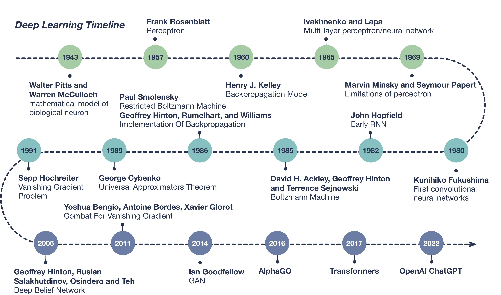
Figure 4.4: 深度学习发展时间线。
直到1986年，Geoffrey Hinton, Rumelhart, 和 Williams 成功将反向传播模型运用于神经网络中， 使得训练复杂的神经网络变得可行(Rumelhart et al., 1986)。 1989年，Yann LeCun 及合作者利用反向传播 （Back-Propagation，BP）算法训练了卷积神经网络， 并成功运用于手写字体的识别(LeCun et al., 1989)， 这为后续深度学习在计算机视觉领域的发展奠定了基础。 同年，George Cybenko提出了通用近似定理（Universal Approximation Theorem）的雏形， 证明拥有隐层及有限神经元个数的前馈神经网络有能力逼近任何连续性方程(Cybenko, 1989)。 但是受限于当时计算机的处理速度，训练深度神经网络还无法实现。 此外，增加神经网络的规模可能导致的``梯度消失’’问题进一步限制了神经网络的应用。 深度学习的发展第二次受阻。
2006年，Geoffrey Hinton, Ruslan Salakhutdinov, Osindero 以及 Teh 在其称为深度信念网络（Deep Belief Networks）中， 堆叠了多个受限玻尔兹曼机（Restricted Boltzmann Machine，RBM）， 使得模型对大数据的训练效率大幅提高(G. E. Hinton et al., 2006)。 之后，随着计算机硬件性能的提升， 特别是人们发现GPU在处理神经网络算法上的巨大优势， 真正开启了深度学习的时代。
2011年，Yoshua Bengio, Antoine Bordes 和 Xavier Glorot 的工作展示了 使用ReLU作为激活函数可以有效避免``梯度消失’’的问题(Glorot et al., 2011)。 2014年，Ian Goodfellow及合作者构造了生成对抗网络 （Generative Adversarial Neural Network, GAN）(Goodfellow et al., 2014)。 GAN以假乱真的能力，使其迅速被运用在了科学、艺术、时尚等各个领域。 2016到2017年，AlphaGo战胜一众围棋世界冠军，展示了其强大的实力。 2017年，谷歌团队提出了Transformer模型(Vaswani et al., 2017)， 并在2018年基于此设计了自然语言处理（Naure Language Processing，NLP）模型Bert， 旨在更好地理解人类每天使用的自然语言。 2022年，同样运用Transformer，由OpenAI开发的ChatGPT （ Generative Pre-training Transformer） 面向公众问世(Brown et al., 2020; OpenAI, 2023; Radford et al., 2018)， 其几乎可以谈论任何主题的能力，迅速引爆舆论。 截至目前，深度学习还在迅速发展中， 应用场景正不断的渗透到各个领域。
4.1.2.2 深度学习的基本概念
Sarker (2021) 按照传统机器学习的分类方式， 将深度学习分为三类：（1）有监督或识别式学习（2）无监督或生成式学习 （3）混合式学习及其他。 图4.5展示了每一类中的代表型算法以及他们的变体。 其中最经典的模型是多层感知机（Multi-layer Perceptron，MLP）。
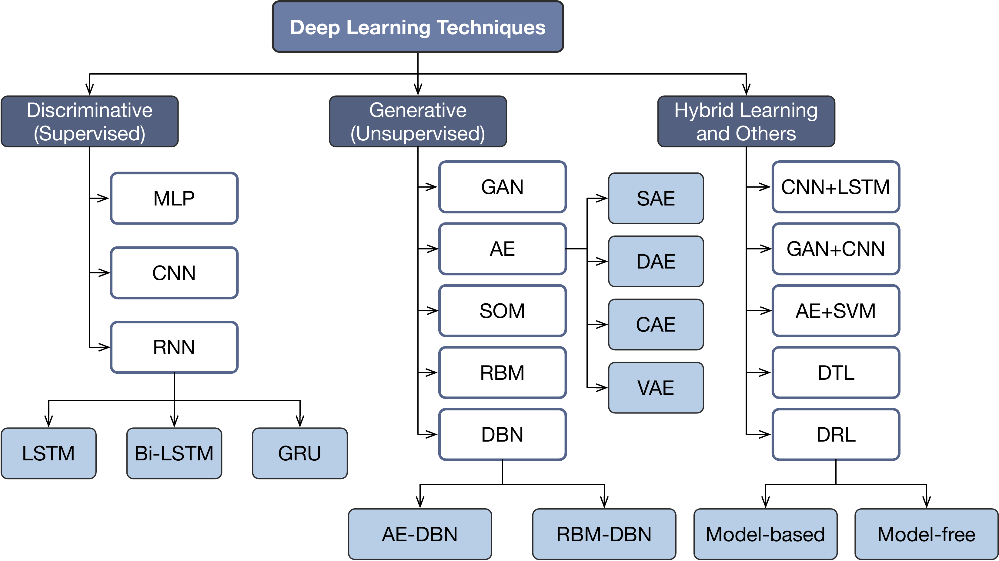
Figure 4.5: 深度学习分类(Sarker, 2021)。
感知机是神经网络中的一个神经元，是构成神经网络的最基本结构。 \[\begin{align} y = {\rm sgn}\left(\sum_i^m w_i x_i +b\right)\ . \tag{4.4} \end{align}\] 公式(4.4)展示了感知机的工作原理： 首先对输入端的数据\(\{x_1, x_2, \cdots, x_m\}\) 赋予权重\(\{w_1,w_2,\cdots,w_m\}\)， 然后对所有结果求和并加上偏置\(b\)， 最后经过激活函数sgn的处理得到输出值\(y\)。 其中权重\(w\)和偏置\(b\)为感知机待学习的参数。 激活函数的主要作用是将输出结果非线性化， 从而使神经网络可以拟合非线性关系。 原始感知机的激活函数是一个阶跃函数sgn\((x)\)， 当\(x>=0\)时sgn\((x)=1\)，当\(x<0\)时sgn\((x)=-1\)。 除此以外，常用的激活函数还有 ReLU、sigmoid、tanh、softmax等， 它们有各自的特性及适用范围(Pedregosa et al., 2011)。
典型的多层感知机是一个全连接的前馈人工神经网络（Feedforward ANN）， 其特征是数据在每层之间单向流动， 每个神经元的输入是上一层所有神经元的输出。 图4.6展示了一个包含两个隐层的多层感知机模型结构。
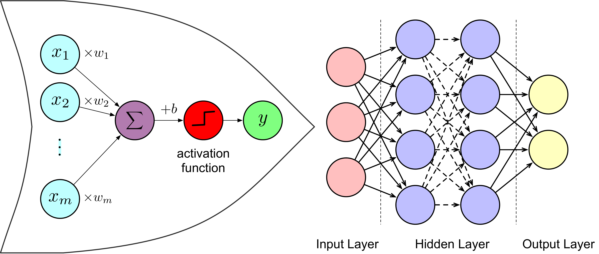
Figure 4.6: 多层感知机模型、全连接神经网络结构示意图。
单层感知机模型是线性模型加激活函数， 因此与训练线性模型一样， 梯度下降法可直接用于训练单层感知机模型 (G. Hinton, 2022; Rumelhart et al., 1986)。 对于多层感知机也可用类似方法。 以回归问题为例， 假设样本\((x,y)\)的输出为\(\hat{y}\)， \(y=(y^1,y^2,\cdots,y^T)\)。 回归问题的输出层一般不需要激活函数， \[\begin{align} \hat{y} = \sum_{h=1}^H w_{ih}z_h + b_{i} \end{align}\] 其中，\(z_h\)为最后一层隐层的输出，共有\(H\)个输出。 \[\begin{align} z_h = \sigma\left(\sum_{j=1}^J w_{hj}z_j + b_{j}\right) \end{align}\] 其中，\(\sigma\)为激活函数，\(z_j\)为上一层的输出，共有\(J\)个输出， 以此类推。 定义损失函数为方均误差， \[\begin{align} L = \frac{1}{2}\sum_{t=1}^T\left(y^t-\hat{y}^t\right)^2 \end{align}\] 要训练的参数有\(w_{ih},w_{hj},\cdots\)及\(b_i,b_j,\cdots\)。 类似公式(4.1)，要更新参数， 只需求出损失函数对相应参数的梯度即可。 例如，由链式法则，误差对参数\(w_{hj}\)的梯度可以写为， \[\begin{align} \frac{\partial L}{\partial w_{hj}} =\frac{\partial L}{\partial y_i} \frac{\partial y_i}{\partial z_h} \frac{\partial z_h}{\partial w_{hj}}\ . \end{align}\] 按照顺序逐层回溯即可得到所有参数的对应结果。 由于误差由输出反向传递给了输入， 所以这种方法称为反向传播法(Rumelhart et al., 1986)。 反向传播是深度学习中最重要的模型优化方法。
4.1.2.3 循环神经网络
在前馈网络中，数据单向流通， 神经元自身、神经元之间都没有数据交换。 与前馈神经网络不同，循环神经网络（Recurrent Neural Network, RNN） 在隐层中添加了神经元的自连接或神经元间的互连接， 使数据不再单向流通(Elman, 1990)。 这种结构可以使得神经元存储来自先前输入的信息， 捕捉数据中的长期依赖关系。
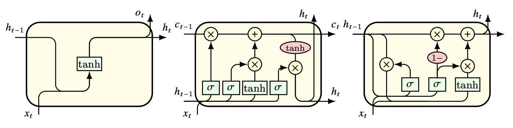
Figure 4.7: 循环神经网络结构。由左至右分别为原始 RNN、LSTM 以及 GRU。
RNN存在”梯度爆炸”或”梯度消失”的问题， 导致原始的RNN很难进行长序列的学习。 为了解决这些问题， 人们提出了 RNN 的各种扩展和变体， 如长短时记忆(Hochreiter & Schmidhuber, 1997)（LSTM）、 门控递归单元(Cho et al., 2014)（GRU） 和注意机制(Vaswani et al., 2017)（Attention）等。 这些模型引入了门和记忆单元等附加组件， 以控制信息流并增强 RNN 的学习能力。
4.1.2.4 卷积神经网络
卷积神经网络（Convolutional Neural Network，CNN） 是一种专为处理图像、视频或文本等结构化数据设计的人工神经网络， 广泛应用于计算机视觉（Computer Vision，CV） 和自然语言处理（Natural Language Processing，NLP）领域， 在图像分类、物体检测、人脸识别、情感分析、机器翻译和语音识别等 许多视觉和语言任务中都具有良好的表现。
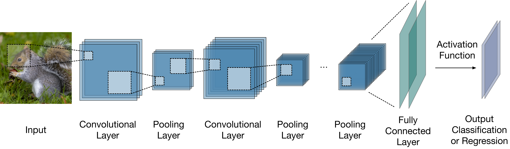
Figure 4.8: 卷积神经网络典型结构。
图4.8展示了一个典型的卷积神经网络结构。 卷积层（Convolutional Layer）是 CNN 的主要组成部分， 它将一组过滤器应用于输入数据，以提取局部特征， 例如图像的边缘、形状、纹理或文本中的单词等。 卷积层之后通常是池化层（Pooling Layer）， 池化层通过对输入数据的某个区域应用最大值、 平均值或求和等函数来降低数据的空间维度。 池化层的作用是在卷积神经网络中对数据进行降维， 提取更高层次的特征， 增强模型的不变性和泛化能力。 卷积层和池化层通常会重复多次， 形成一个分层特征提取过程， 其中每一层都能识别更复杂、更抽象的模式。 CNN 的最后一层通常是一个全连接层（Fully Connected Layer）， 根据任务的不同充当分类器或回归器的作用， 并产生网络的最终输出结果。
4.1.2.5 生成式神经网络
生成式网络（Generateive network）是一类无监督深度学习方法。 比较常见的算法有自编码器（Auto-encoder，AE）， 深度信念网络等。 Goodfellow et al. (2014) 提出的生成对抗网络 （Generative Adversarial Network，GAN）是生成式网络 最具突破性的代表之一， 通过加入对抗识别模块，显著减少了神经网络的使用层数， 极大的提高了模型的训练效率。 原始的GAN是一种无监督学习模型， 但随着GAN的成功，很快便发展出一系列衍生和变体模型 (Isola et al., 2016; Mirza & Osindero, 2014; Odena et al., 2016)。
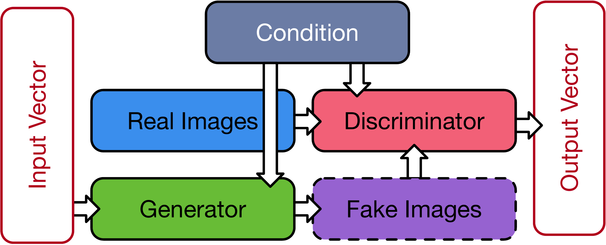
Figure 4.9: 条件生成对抗网络结构。
图4.9 展示了条件生成对抗网络（CGAN）(Mirza & Osindero, 2014) 的基本结构。 GAN 主要由两个相互 “对抗” 的 模块组成: 生成器 (Generator) 与判别器 (Discriminator)。 生成器的作用是在给定 一组随机向量 \(z\) 时， 生成对目标图像 \(x\) 的模拟 \(G(z)\)。 判别器的作用是区分生成器的输出与训练集中真实图像之间的差异， 判断生成器的输出是否可以 “以假乱真”。 判别器的引入极大的提升了网络的训练效率。
GAN的目标函数为， \[\begin{align} {\rm arg} \min_G \max_D \mathcal{L}_{\rm GAN}(G,D) =\mathbb{E}_x[\log D(x)]+\mathbb{E}_z[\log(1-D(G(z)))]\ . \end{align}\]
其中，\({\rm arg} \min\)/\(\max f(x)\)表示：当\(f(x)\)取最小/最大值时， 求解参数\(x\)的值。 \(\mathbb{E}\)表示数学期望。 \(D(x)\)表示输入为\(x\)时判别器的输出。 对判别器，需要调节判别器参数， 令\(\mathbb{E}_x[\log D(x)]+\mathbb{E}_z[\log(1-D(G(z)))]\)最大化（\(\max_D\)）。 对生成器，需要在固定判别器参数时调节生成器参数， 令\(\mathbb{E}_z[\log(1-D(G(z)))]\)最小化（\(\min_G\)）。 在实际训练生成器时，通常选择令\(\mathbb{E}_z[\log D(G(z)]\)最大化。
如果对生成器和判别器提供额外的约束条件\(y\)， 则可以将GAN扩展为条件生成对抗网络。 此时，目标函数变为 \[\begin{equation} {\rm arg} \min_G \max_D \mathcal{L}_{\rm CGAN}(G,D) =\mathbb{E}_{x,y}[\log D(x|y)]+\mathbb{E}_{z,y}[\log(1-D(G(z|y)))]\ . \end{equation}\]
4.1.3 强化学习
在人类或动物的行为模式中， 一个动作是否产生奖励会影响其下一步行动。 强化学习（Reinforcement Learning, RL）试图模仿这种决策模式， 通过学习环境对主体行为的反馈优化主体行为， 从而获取更多奖励(Littman, 2015; Sutton & Barto, 2018)。
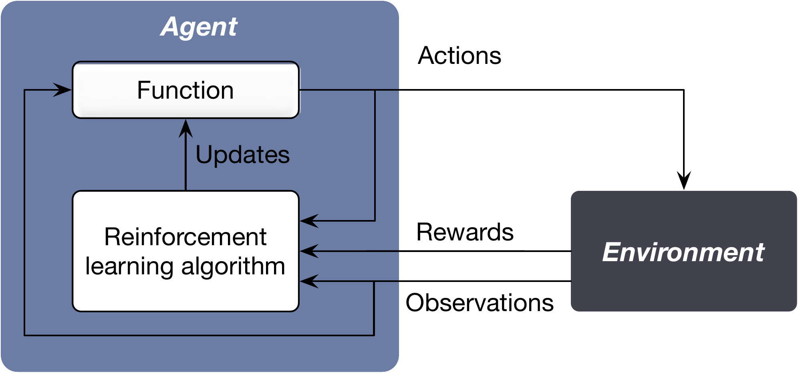
Figure 4.10: 强化学习。
图4.11展示了强化学习算法的分类图。 强化学习有无模型（model-free）和有模型（model-based）两种模式。 无模型强化学习算法不会建立环境的模型，而是直接从与环境的交互中学习， 有模型强化学习算法会首先尝试学习或给定一个环境模型， 然后使用这个模型来进行策略并进行学习。 强化学习在各个领域都有应用，包括机器人学、游戏玩法、金融和医疗保健。
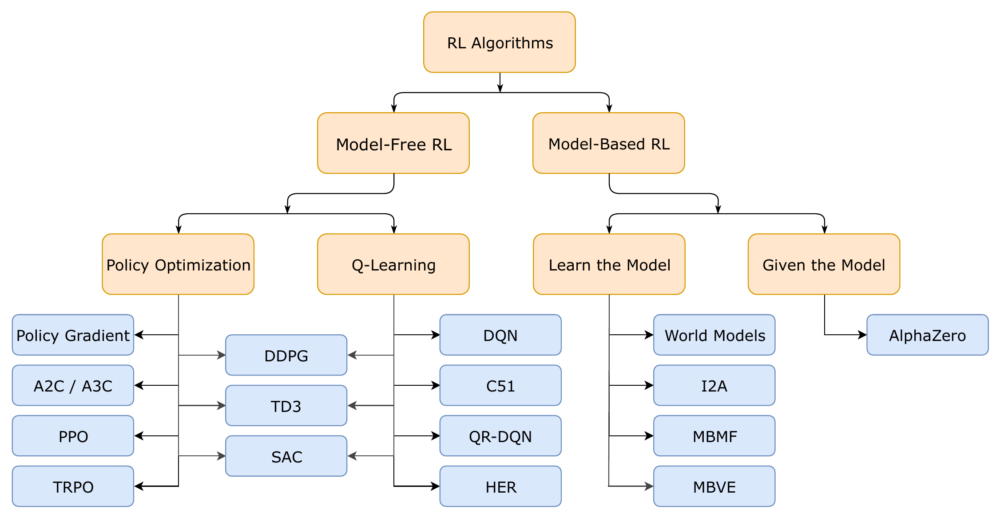
Figure 4.11: 强化学习分类（图片来源：OpenAI）。
4.1.3.1 马尔可夫决策过程
马尔可夫决策过程（Markov Decision Processing, MDP） 是强化学习问题在数学上的理想化形式。 一个马尔可夫决策过程由元组\((S,A,P,R,\gamma)\)定义， 其中， （1）\(S\)为状态集，\(s\in S\)表示环境中的一个特定情境或配置； （2）\(A\)为动作集，\(a\in A\)表示动作集中可能采取的一个行动； （3）\(P\)为状态转移概率函数，\(P(s'|s,a)\)表示通过采取行动\(a\)从状态\(s\)过渡到状态\(s'\)的概率； （4）\(R\)为奖励函数，\(R(s,a,s')\)表示通过采取行动\(a\)从状态\(s\)过渡到状态\(s'\)后获得的即时奖励； （5）\(\gamma\)为折损因子，是一个介于0和1之间的参数，确定未来奖励的重要性。 折后的累积奖励为， \[\begin{align} G = R_1 + \gamma R_2 + \gamma^2 R_3 + \cdots\ . \end{align}\] 其中，\(R_i\)表示第\(i\)期奖励。
MDP的目标是找到一个策略（policy）， 使得累积奖励的期望最大。 策略\(\pi\)是从状态到行动概率的映射， \(\pi(a|s)\)表示当状态为\(s\)时，采取行动\(a\)的概率。 策略决定了智能体（agent）的决策行为。 累积奖励通常通过值函数进行描述。 当智能体遵循特定策略\(\pi\)时， 在状态\(s\)下未来累积奖励的期望值称为策略\(\pi\)的状态值函数， \[\begin{align} V^\pi (s) = \sum_{k=0}^\infty \gamma^k \mathbb{E}_\pi [R_{t+k+1}|s_t=s]\ . \end{align}\] 在状态\(s\)下采取行动\(a\)后未来累积奖励的期望值称为策略\(\pi\)的状态行动值函数， \[\begin{align} Q^\pi (s,a) = \sum_{k=0}^\infty \gamma^k \mathbb{E}_\pi [R_{t+k+1}|s_t=s,a_t=a]\ . \end{align}\] 策略、状态值函数与状态行动值函数满足如下关系， \[\begin{align} V^\pi(s)=\sum_{a\in A} \pi(a|s)Q^\pi(s,a)\ . \end{align}\]
贝尔曼方程（Bellman Equation）给出了某个状态值函数与其后继状态值函数间的关系， \[\begin{align} V^\pi(s)=\mathbb{E}_\pi \left[R_{t+1}+\gamma G_{t+1}| s_t=s\right] \end{align}\] 最优价值函数可以用贝尔曼最优方程进行递归性描述， \[\begin{align} V^\ast(s) = \max_a \sum_{s'} P(s'|s,a)\left[R(s,a,s') +\gamma V^\ast (s')\right] \end{align}\] 类似的也可以写出状态行动值函数\(Q(s,a)\)对应的贝尔曼方程。 寻找最优策略的问题可以转换为为寻找最优的状态值函数或状态行动值函数。
求解最优值函数最常用的方法有动态规划（Dynamic Programming，DP）、 蒙特卡洛（Monte-Carlo，MC）和 时序差分学习（Temporal Difference Learning，TDL）等。
4.1.3.2 动态规划
动态规划直接根据贝尔曼公式将问题分解成一步步的子问题， 然后进行递归求解。 这就要求可以对环境的动态变化进行建模， 确定状态转移概率函数和奖励函数的具体形式（model-based）。 但是在现实问题中，往往无法对问题进行如此完备的描述。 此外，动态规划的计算复杂度较高， 还有可能遭遇由于状态数量激增导致的``维度灾难’’。
4.1.3.3 蒙特卡洛
蒙特卡罗方法不需要对问题进行完备的描述， 直接从经验中学习规律（model-free）。 选取一个样本使其遍历整个决策过程， 可以得到该样本对应的状态、行动、以及奖励序列， 这个过程称为一幕（episode）。 蒙特卡洛法通过随机采样法，对不同样本的幕进行平均， 可以更高效的处理动态规划的问题。 蒙特卡洛可以分为两种算法： 同轨策略（on-policy）法和离轨策略（off-policy）法。 同轨策略法直接使用要学习的目标策略来生成样本 并更新值函数及策略； 离轨策略法则将策略分为了目标策略与行动策略， 行动策略专门用来生成样本供目标策略进行学习。 蒙特卡洛法需要令每个样本都遍历整个决策过程， 即到达幕的末尾， 这可能导致收敛过慢甚至难以收敛。 此外，蒙特卡洛结果的方差往往较大。
4.1.3.4 时序差分学习
第三种方法是时序差分学习，它结合了动态规划与蒙特卡洛。 时序差分不需要令每个样本都遍历整个决策过程， 它通过学习样本当前状态与后继状态间的差别来优化值函数， 因此极大的提升了蒙特卡洛方法的学习效率。
SARSA与Q-learning分别是同轨策略与离轨策略下， 时序差分算法的典型代表。 SARSA（state-action-reward-state-action）是同轨策略下的时序差分， \[\begin{align} Q(s_t,a_t) \leftarrow Q(s_t,a_t) + \alpha \left[ R_{t+1} + \gamma Q(s_{t+1},a_{t+1}) - Q(s_t, a_t) \right] \end{align}\] Q-learning是一种离轨策略下的时序差分学习(Watkins & Dayan, 1992)。 \[\begin{align} Q(s_t,a_t) \leftarrow Q(s_t,a_t) + \alpha \left[ R_{t+1} + \gamma \max_a Q(s_{t+1},a) - Q(s_t, a_t) \right] \end{align}\]
4.1.3.5 函数逼近法
函数逼近法的基本思想是用一个参数化的函数来近似值函数或策略函数， 然后通过学习调整参数来优化性能。 函数逼近法可以分为线性函数逼近和非线性函数逼近， 其中非线性函数逼近又可以进一步分为基于表格的方法和基于神经网络的方法。
深度强化学习（Deep Reinforcement Learning，DRL） 是利用深度神经网络来逼近值函数和策略函数的一类学习方法。 由此诞生了许多在复杂环境中表现出色的算法， 如Deep Q-Networks(Mnih et al., 2013)（DQN） 和Proximal Policy Optimization(Schulman et al., 2017)（PPO）等。
4.1.4 集成学习
集成学习（ensemble learning/methods）是指 通过结合多个学习器构建的一类学习方法(Breiman, 1996; Sagi & Rokach, 2018; Z.-H. Zhou, 2012)。 Dietterich (2000) 指出了集成学习可能优于单一学习器的三点根本原因： （1）统计学原因：单一学习器在数据集不足时可能产生拥有相同精度的不同结果。 通过集成这些单一学习器，可以在统计学上降低错误答案出现的概率。 （2）计算型原因：很多算法在寻找最优解时会卡在局部最优解而非全局最优解， 例如深度学习中的梯度下降和决策树中的贪心分裂（Greedy Splitting）， 都属于NP-hard问题。 通过集成初始位置不同的单一学习器，集成学习可以更加接近全局最优解。 （3）表征型原因：想要学习的真实结果可能存在于未知的假设区域， 不能被单一学习器所表征。 集成不同的算法可以扩大他们的表征范围，从而找到更真实的结果。
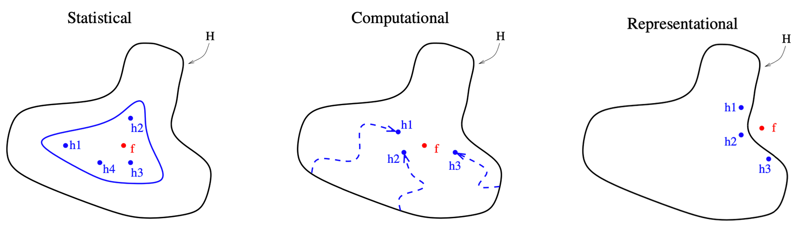
Figure 4.12: 集成学习优于单一学习器的三点根本原因。
图4.12形象的展示了上述三点原因。 外围黑色实线表示单一学习器所能表征的假设空间的范围， \(h_1,h_2,h_3,\cdots\)分别表示单一学习器给出的结果， \(f\)代表真实结果。 相比单一的学习器，集成学习可以显著提升模型的精度、降低模型的偏差。
常用的集成学习主要有三种结构：Bagging、Boosting及stacking。
4.1.4.1 Bagging
Bagging(Bootstrap aggregating)通过Bootstrap对数据进行重采样， 然后用独立的模型学习这些样本， 最后集成所有习得的模型(Breiman, 1996; Sagi & Rokach, 2018)。 随机森林（Random Forest）是 Bagging算法的典型代表(Biau & Scornet, 2016; Breiman, 2001)。 随机森林使用决策树作为学习器， 将所有学习器在bootstrap样本上习得结果的平均值作为最终结果。
4.1.4.2 Boosting
Boosting使用弱学习器（例如深度较浅的决策树）构建一个学习器序列， 令序列中的每个学习器学习上一个学习器的输出， 最后集成所有弱学习器得到一个强学习器。 Boosting算法的代表是AdaBoost(Freund & Schapire, 1997)（Adaptive Boosting） 和Gradient Boosting(Friedman, 2001, 2002)。
梯度提升（Gradient Boosting）是近年表现最突出的机器学习算法之一。 其主要思想是利用一个弱学习器去学习上一个弱学习器损失函数的负梯度（Gradient）。 常用的 Gradient Boosting 框架有华人学者陈天奇开发的 XGBoost(T. Chen & Guestrin, 2016)3， 微软的LightGBM4， 以及俄罗斯团队开发的 CatBoost5。
4.1.4.3 Stacking
Stacking 采取的集成方式是在相同数据集上使用不同的模型进行学习， 再将学习到的结果构建成新的数据集， 然后利用另一个模型，称为元学习器或二级学习器， 进行最终的学习(Wolpert, 1992)。
4.2 机器学习在算法交易中的应用
由于机器学习在处理复杂非线性问题上具有明显优势。 越来越多的分析师及研究人员开始使用人工智能技术分析庞大的金融数据集， 识别复杂的模式，并开发用于交易和投资组合管理的模型。
4.2.1 订单簿模拟
订单簿模拟是量化交易中一个非常重要的工具， 它帮助交易者更深入地理解市场动态， 测试和优化交易策略，同时管理潜在的风险 (Abergel & Jedidi, 2011; R. Huang & Polak, 2011; W. Huang et al., 2015; Morariu-Patrichi & Pakkanen, 2021; Roşu, 2009)。 订单簿模拟最简单的方法是历史数据回放， 这种方法可以帮助交易者理解过去特定事件对市场的影响， 但是很难反应真实交易环境中的各种复杂环境变化。 除此以外，还有多种方法和技术被用于提高模拟的真实性和有效性。
蒙特卡洛模拟。 蒙特卡洛模拟方法通过随机过程生成数据， 从而模拟可能的市场情况。 这种方法特别适用于评估在不确定的市场条件下交易策略的表现。 蒙特卡洛模拟可以提供对潜在市场行为的广泛洞察， 帮助交易者准备应对各种可能的市场波动。
基于代理的模型(Farmer & Foley, 2009; Shi & Cartlidge, 2023)。 基于代理的模型涉及创建一个虚拟的市场环境， 其中多个交易代理（Agent）根据预设策略进行交易。 这种模型有助于分析和理解市场中的复杂交互作用。 每个代理代表了一个市场参与者， 他们的交易决策和行为模式可以基于实际市场数据或假设的行为模式来设定。
事件驱动模拟。 事件驱动模拟考虑到了市场中的关键事件， 如重大新闻发布、政策变动、经济数据公布等。 这些事件对市场的影响通常是显著的， 因此，在模拟中加入这些因素可以帮助交易者理解和预测这些事件对市场可能产生的影响。
机器学习和人工智能。 随着技术的进步，机器学习和人工智能在订单簿模拟中扮演着越来越重要的角色。 利用这些先进技术，可以预测和模拟市场行为的复杂模式， 甚至在某些情况下，可以模拟市场的未来动向。 深度学习等方法能够处理和分析大量的历史数据， 从而生成更精确的市场模拟结果。 例如，Takahashi et al. (2019), J. Li et al. (2020), Coletta et al. (2022), Cont et al. (2023) 使用生成对抗网络模拟了订单簿， Briola et al. (2020) 使用LSTM深度网络模拟订单簿等。
4.2.2 价格预测
股票价格预测是金量化交易和算法交易研究的核心问题。 通过分析历史数据、市场趋势和其他相关因素来预测未来的股票价格， 对于投资者制定投资策略、管理风险和寻求收益都至关重要。 虽然股票价格预测具有极高的价值， 但其复杂性和不确定性意味着没有任何一种方法可以保证完全准确。 投资者需要结合多种方法和工具， 同时考虑市场的动态变化，灵活调整投资策略。
| Main Algorithm | Studies |
|---|---|
| Neural Network | Rajihy et al. (2017), H. Hu et al. (2018), L. Zhang et al. (2018), Shen & Shafiq (2020a) |
| GAN | K. Zhang et al. (2019), Diqi et al. (2022) |
| CNN | Tsantekidis et al. (2017), Gunduz et al. (2017), Hoseinzade & Haratizadeh (2019), Cao & Wang (2019), Lu et al. (2020), Ishwarappa & Anuradha (2021) |
| LSTM | Bao et al. (2017), Minh et al. (2018), Baek & Kim (2018), Shen & Shafiq (2020b), Y. Li et al. (2020), S. W. Lee & Kim (2020) |
| SVM | M.-C. Lee (2009), Z. Hu et al. (2013), Rustam et al. (2019), Liagkouras & Metaxiotis (2020), Yuan et al. (2020), Mahmoodi et al. (2022) |
| Decision Tree | Lai et al. (2009), P.-Y. Zhou et al. (2018), Carta et al. (2021) |
| XGBoost | M. Jiang et al. (2020), Kim et al. (2020), Yun et al. (2021), Almaafi et al. (2023) |
| Reinforcement Learning | C. Y. Huang (2018), Pricope (2021) |
传统统计方法利用如移动平均线、指数平滑等来预测股价未来趋势， 但随着人工智能技术的发展， 机器学习，特别是深度学习， 在股票价格预测中的应用越来越广泛。 表4.1 展示了近年一些利用不同机器学习、深度学习技术 预测股票价格的研究工作。 更多研究可以参考综述文章 Zou et al. (2022), Kumbure et al. (2022), Patel et al. (2023)。
虽然许多研究表明机器学习可以有效提升股票价格预测的精度， 但股票价格预测仍然面临着许多挑战和问题。 首先，证券市场非常复杂，受多种因素影响， 包括政治事件、经济变化、公司业绩等，这些因素往往难以准确量化。 其次，市场参与者的行为模式本身就是非线性和动态的， 这使得模型构建变得更加困难。 此外，过拟合是机器学习面临的一个常见问题， 特别是在使用高度复杂的模型时，市场不确定性带来的影响一直是一个重要的挑战。
4.2.3 情绪分析
金融情绪分析（Financial Sentiment Analysis） 是预测资产价格走势的另一种重要手段。 利用机器学习进行金融情绪分析一直面临两个难点： 一是处理不同语言的特异性，一是缺少有标签的数据集。
传统机器学习的特征提取方式通常是对反应情绪的关键词进行计数(Agarwal & Mittal, 2015)， 但这种方式的效率和准确度较低。 深度学习通过词汇嵌入（word embedding）将文本映射为向量， 然后交给神经网络进行学习。 例如，Severyn & Moschitti (2015), Swathi et al. (2022) 通过分析twitter文本， 结合深度学习算法对市场情绪进行了分析，并预测了市场走向。 随着近年自然语言处理（NLP）取得的突破性进展(Landolt et al., 2021)， 利用预训练模型解决上述问题开始变得可行。 FinBert(Araci, 2019) 第一次将Bert预训练模型运用于金融情绪分析并取得了一些突破进展。 Lopez-Lira & Tang (2023) 研究了利用ChatGPT进行市场情绪预测的可行性。
4.2.4 合规检测
股市合规检测是一个复杂的过程， 旨在确保金融机构和个人参与者遵守相关法律、规则和标准。 对算法交易影响较大的主要是市场操纵和市场欺诈行为。
股市操纵通常涉及通过虚假信息、 误导性行为或其他手段人为影响股票价格或交易量， 从而使市场参与者作出基于误导的决策。 例如，通过内部交易、回购或其他手段创造虚假的市场活动，误导其他投资者； 故意推高或压低股价，以便在不正当的价格水平买入或卖出； 通过媒体、社交网络或其他渠道散播虚假或误导性信息，以影响股价等。 Chullamonthon & Tangamchit (2023) 通过深度学习检测股价是否存在操纵。
股市欺诈涉及使用欺骗手段来误导投资者， 通常是通过虚假声明、隐瞒重要信息或其他欺诈行为。 例如，企业通过夸大收入、隐藏债务或其他方式操纵财务报表，误导投资者和市场； 通过虚假的投资机会欺骗投资者等。 Craja et al. (2020) 利用深度学习检测财务报表做假行为。 Ali et al. (2022) 回顾了基于机器学习的市场欺诈行为检测的相关工作。
References
XGBoost: https://xgboost.ai↩︎
LightGBM: https://lightgbm.readthedocs.io/↩︎
CatBoost: https://catboost.ai↩︎